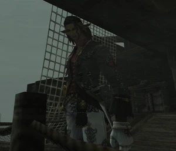

Level 75 reference · Zenith rules
|
Type: NPC |
 |

Battle NPC
Prince Luzaf is the Ashu Talif Captain that you need to bring down to 20% in Aht Urgan Mission 15: The Black Coffin on the Ghost Ship the Black Coffin.
Special Attacks
- Uses Vulcan Shot that can do about 700 AoE damage around his target area.
Battle Info
| Zone | Level | Drops | Steal | Spawns |
Notes |
|---|---|---|---|---|---|
|
HP = Detects Low HP; M = Detects Magic; Sc = Follows by Scent; T(S) = True-sight; T(H) = True-hearing JA = Detects job abilities; WS = Detects weaponskills; Z(D) = Asleep in Daytime; Z(N) = Asleep at Nighttime | |||||

Notes:
Adapted from Eden Wiki: Prince Luzaf · Contributors and history · CC BY-SA 4.0. Revision 44921. Layout, links and optional background text adapted for Zenith.